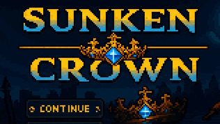
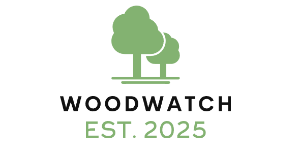
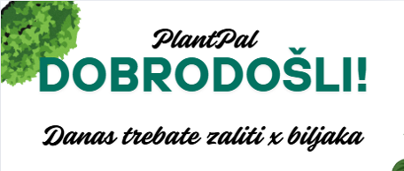

Sunken Crown
Indie videoigra u razvoju u sklopu kolegija: “Osnove razvoja videoigara”. Osmišljena kao 2D Pixel art dungeon defense i offense igra sa sistemom plaćenika i diplomacije. Inspirirana “Kingdom” te “Kingdom Two Crown’s” franšizom igara te “Darkest Dungeon” igrom. Svi asseti su ručno napravljeni u aplikaciji Aseprite, te je pozadinska muzika napravljena u FL Studiju.

WoodWatch
Web aplikacija napravljena u sklopu kolegija: “Uvod u programiranje za web”. Rađena u Visual Studio Code-u, a baza podataka je napravljena u Firebase database sustavu. Napravljeno za Šumare.

PlantPal
Mobilna aplikacija napravljena u Android studiju u sklopu kolegija: “Uvod u programsko inženjerstvo”. Omogućuje praćenje biljaka i obaviješćuje korisnika o vremenu zalijevanja biljki.
AutoMate
Aplikacija napravljena u sklopu kolegija “Uvod u dizajn korisničkog sučelja i iskustva”. Aplikacija služi kao digitalna servisna knjižica, uz to omogućava stavljenje podsjetnika za servis određenih dijelova automobila.